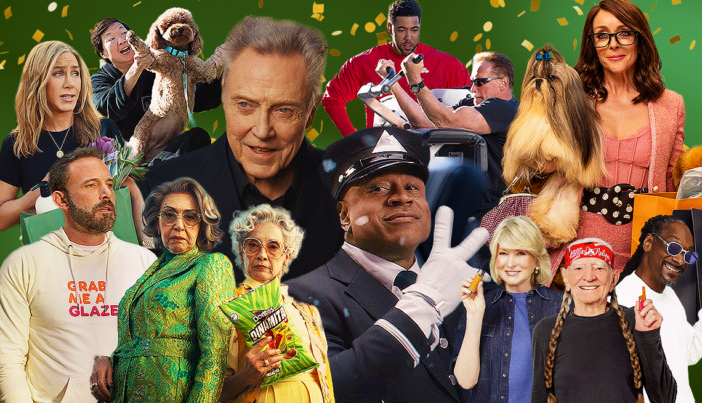

Can AI Create a Super Bowl-Worthy Commercial?
Every year, millions of viewers tune in to the Super Bowl—not just for the game, but for the commercials. Some of the most iconic ads in history, from Apple’s 1984 to Budweiser’s Whassup?, have left a lasting impact on pop culture. But could artificial intelligence ever craft a Super Bowl-worthy commercial?
With AI writing everything from news articles to movie scripts, I decided to put it to the test. Could AI generate an ad that rivals the most memorable Super Bowl commercials? I turned to AI-powered ad generation tools to find out.
AI, Write Me a Super Bowl Ad I prompted an AI model to generate a commercial script for a fictional Super Bowl ad. The criteria? It needed to be emotionally compelling, engaging, and have that signature mix of humor, heart, and cultural relevance that makes Super Bowl ads so memorable.
Here’s what AI came up with:
[AI-Generated Super Bowl Ad Script: “Grandpa’s Sneakers”]
Scene opens in a dimly lit attic. A young boy, around 10 years old, rummages through old boxes. He pulls out a pair of dusty sneakers and holds them up.
Boy: “Hey, Mom, whose shoes are these?”
His mother, standing in the doorway, smiles.
Mom: “Those were Grandpa’s. He said they made him run like the wind.”
The boy grins, slips on the oversized sneakers, and dashes outside. Suddenly, everything changes—cinematic slow motion, epic music, wind blowing through his hair. He’s not just running. He’s FLYING down the street.
Cut to a flashback: Grandpa, years earlier, lacing up the same sneakers before a big race. He takes off, just like his grandson.
Back to the present—the boy leaps over a puddle, dodges a dog, and lands triumphantly in front of his dad.
Dad (laughing): “Whoa! Where’d you get those shoes?”
Boy (grinning): “Grandpa’s got good taste.”
Text fades in: “Some things never go out of style.”
The camera zooms in on the sneakers—now clean, fresh, and branded with a familiar logo.
[Nike logo appears] “Just Do It.”
Does AI Have the Creativity for Super Bowl Ads? At first glance, the AI-generated ad is pretty impressive. It follows the classic storytelling formula we see in Super Bowl commercials: nostalgia, emotional connection, and a product seamlessly woven into the narrative. But could it truly compete with the best?
Let’s break this down.
What AI Gets Right:
- Emotional Hook: The AI-generated ad plays on nostalgia and family bonds, similar to heartwarming commercials from Budweiser or Google. It understands that great ads aren’t just about selling a product; they tell a story.
- Clear Brand Message: The ad naturally incorporates Nike’s identity—heritage, athleticism, and motivation—without making it feel forced.
- Cinematic Appeal: Slow-motion sequences, flashbacks, and dramatic music cues are all techniques used in big-budget commercials. AI recognizes these visual storytelling elements.
Where AI Falls Short:
- Originality: The ad follows a tried-and-true formula but lacks the surprise factor. The best Super Bowl ads have something unexpected—whether it’s humor (Doritos’ Ultrasound), cultural relevance (Jeep’s The Middle with Bruce Springsteen), or sheer absurdity (Old Spice’s The Man Your Man Could Smell Like).
- Cultural Nuance: Super Bowl ads often tap into trending social themes, current events, or internet humor. AI struggles with this because it generates content based on past data rather than the present cultural moment.
- Human Touch: The best commercials often include tiny, unscripted moments—an actor’s facial expression, a pause in dialogue, or a perfectly timed joke. AI can generate the structure, but it lacks the finesse of human creativity.
So, Can AI Create a Super Bowl-Worthy Commercial?

AI can definitely produce a solid ad concept—it understands storytelling, branding, and emotional appeal. But when it comes to capturing that elusive Super Bowl magic, it’s not quite there yet. The best Super Bowl commercials break the mold. They take risks, tap into cultural trends, and deliver unexpected twists. AI, at least for now, plays it safe. It creates ads that feel familiar but not groundbreaking.
That said, AI could still be a powerful co-writer in the ad industry. Imagine a future where AI generates the first draft of a commercial, and human creatives refine it with humor, cultural insights, and a touch of unpredictability. The perfect blend of human ingenuity and AI efficiency might just produce the next iconic Super Bowl ad.